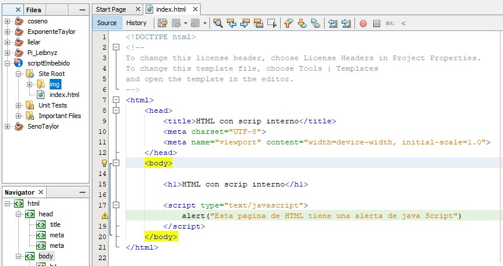

A continuacion tenemos una imagen donde podemos ver el codigo fuente del script en el html podemos obvservar que es algo minimo pero asi entendemos su funcionamiento facilemten, lo que esta dentro de las etiquetas script html lo tomara como java script y si es algo ajeno a el no lo tomara en cuenta, tenemos un script que arroja la alerta al iniciar la pagina.
